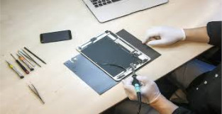

Tech Home
Sua Assistência Técnica em casa
Conserto de Tablet
Se você tem um tablet, provavelmente já sabe o quão sensível são esses aparelhos. Uma queda ou uma pancada pode facilmente resultar em uma tela LCD danificado ou a tela touch quebrada. Se você precisa de um serviço de reparação de tablet por causa de danos como este, ou tem mau funcionamento de peças em seu tablet que precisam ser substituídos, nós podemos solucionar. Oferecemos uma grande variedade de serviços com desconto, e nos orgulhamos de ser o recurso mais confiável para reparação de tablet no Rio de Janeiro.
Sobre os nossos serviços de reparação tablet:
Aqui na Tech Home, reparamos todos os principais tablets disponíveis no mercado. Nossos técnicos estão qualificados a reparar qualquer marca ou modelo de tablet, desde telas quebradas, reparo do conector de carregamento, troca do botão power, do botão home, reparo do conector de fone de ouvido, troca de bateria do seu Motorola xoom, Blackberry, google nexus e tablet importados, como telas rachadas ou quebradas em seu Samsung Galaxy Tab e HTC. Nós oferecemos serviço completo de troca de tela e outros diversos tipos de serviços, com diagnóstico rápido e gratuito. Você não precisa se preocupar. Nossos técnicos tem a solução para o seu tablet com defeito.
Nossa esquipe de técnicos esta apta a resolver uma série de problemas comuns, tais como:
- Tablet com tela quebrada ou rachada
- Tela touch Rachado / tela riscada / quebrada
- Software / erro de instalação do sistema operacionl
- Hardware / Erro ao ligar (troca do botão power de tablet)
- Problemas de energia / troca de bateria
- Pontos ou soquetes quebrados / defeituosa
Temos em nosso estoque uma variedade de peças de reposição para os seguintes aparelhos citados abaixo; e não se preocupe se o seu não está na lista, pois somos especializados em manutenção de tablets e conseguimos obter peças através de nossos fornecedores.
- Conserto ASUS Google Nexus
- Conserto ASUS Eee Pad Transformer Prime
- Conserto do Apple iPad
- Conserto do Acer Iconia
- Conserto do Motorola Xoom
- Conserto do Samsung Galaxy Tab
- Conserto do Samsung Galaxy Note
- Conserto do Sony Tablet S
- Conserto tablet foston